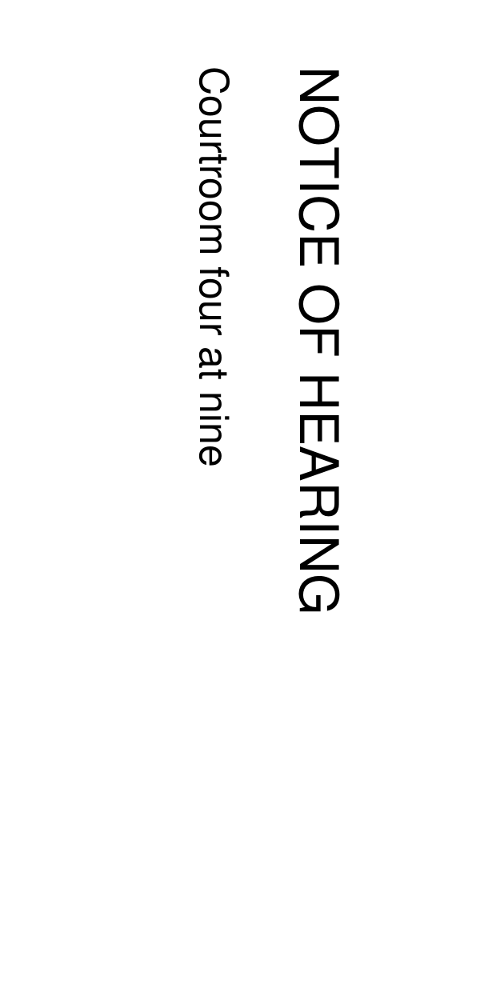
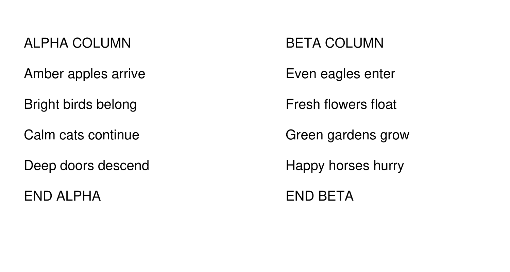

Exact unchanged text is qualified. This is an optional concise visual review, with no blanket owner-approval hold.
| Sample | Measured result |
|---|---|
| 27 public PDF pages | Exact baseline text, OCR selection and image coverage |
| Native report | Exact word/typography golden |
| Mixed / rotated / stale OCR | Expected visible text; stale text excluded |
| Tall scroll | All 59 lines in five 300-DPI bands |
| Sideways photo / two columns | Exact baseline text; confidence changes; columns rotation corrected 90° → 0° |
No unexplained new text difference in these samples requires owner judgment. Version and pdf_processor metadata changes are intentional. Both public repositories begin with fresh histories for their first 0.1.0 release.
# Native Report ## Page 1 Annual Report Findings The committee met on nine occasions during the year and heard from forty witnesses, whose evidence is set out below in full. It found the central claim to be unsupported by run_check(). · first exhibit · second exhibit See the archive for more. Year Hearings Witnesses 2019 4 17 2020 5 23 Jane Example Clerk of the Committee 12 Long Example Street North ## Page 2 A plain second page.
# Mixed Rotated Stale ## Page 1 Exact native evidence. ## Page 2 Scanned source evidence. The archive contains three readable records. Native text stays exact. Stale OCR is replaced. No private document was used. ## Page 3 Scanned source evidence. The archive contains three readable records. Native text stays exact. Stale OCR is replaced. No private document was used.
# Tall Scroll ## Page 1 Scroll source evidence Scroll source evidence Scroll source evidence Scroll source evidence Scroll source evidence Scroll source evidence Scroll source evidence Scroll source evidence Scroll source evidence Scroll source evidence Scroll source evidence Scroll source evidence Scroll source evidence Scroll source evidence Scroll source evidence Scroll source evidence Scroll source evidence Scroll source evidence Scroll source evidence Scroll source evidence Scroll source evidence Scroll source evidence Scroll source evidence Scroll source evidence Scroll source evidence Scroll source evidence Scroll source evidence Scroll source evidence Scroll source evidence Scroll source evidence Scroll source evidence Scroll source evidence Scroll source evidence Scroll source evidence Scroll source evidence Scroll source evidence Scroll source evidence Scroll source evidence Scroll source evidence Scroll source evidence Scroll source evidence Scroll source evidence Scroll source evidence Scroll source evidence Scroll source evidence Scroll source evidence Scroll source evidence Scroll source evidence Scroll source evidence Scroll source evidence Scroll source evidence Scroll source evidence Scroll source evidence Scroll source evidence Scroll source evidence Scroll source evidence Scroll source evidence Scroll source evidence Scroll source evidence

# Sideways Photo ## OCR NOTICE OF HEARING Courtroom four at nine

# Two Columns ## OCR ALPHA COLUMN Amber apples arrive Bright birds belong Calm cats continue Deep doors descend END ALPHA BETA COLUMN Even eagles enter Fresh flowers float Green gardens grow Happy horses hurry END BETA
Public fixture attribution: source/license/hash manifest. Remaining public-fixture parity is in the machine receipt. No private corpus is used.